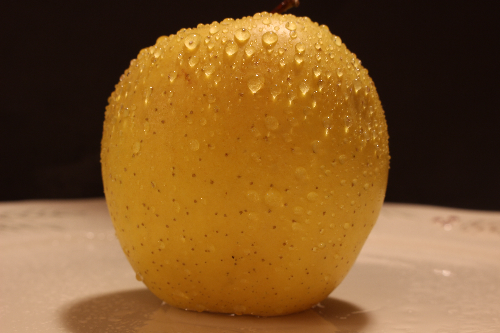

Photography can capture some of life's best moments, put them in a little picture, and save them for you to enjoy later. Photography can play with our emotions, sometimes in a bad way, like a picture from the holocost, but usually in a good way, such as a family vacation you enjoyed or a fun night out with friends. Photography can bring past moments to a whole new life, capturing moments we thought were long lost and bringing them back, fresh in our minds. This is why we think photography is important.
Here's a picture I (Eli) took of a bunch of grapes, with a low ISO but an even lower shutter speed. This mixed with a mid ranged aperature led to a very focused picture with good mixed lighting.

Pictured below is another picture of a fruit I did, same ISO, Shutterspeed, and Aperature, but with a darker background.
 Back to Top